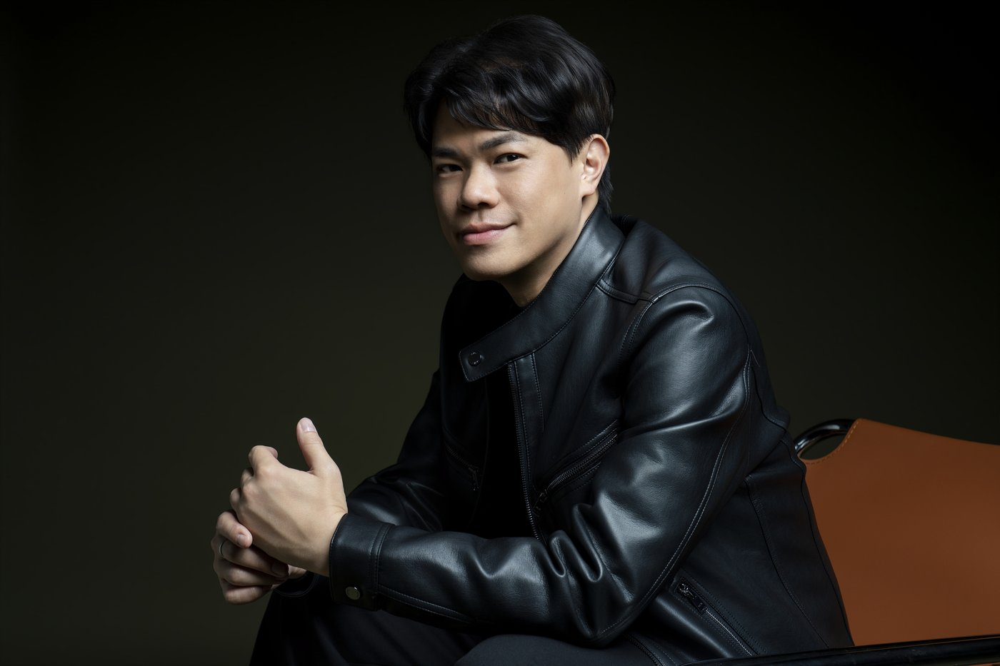

案例 · Case
執行長的形象照，
不一定要穿西裝
許景泰 Jerry｜商戰 CXO 執行長
「我是 Jerry，我是一名企業的商業顧問及教練。」這是許景泰在形象影片裡說的第一句話。
他是商戰 CXO 的執行長。CXO 是一個商務社群，宗旨是「去見更厲害的人，擴大你的無限可能」，他在影片裡說，社群有幾千位來自各行各業的會員。經營這樣的社群，執行長本人站出來的樣子，常常就是別人對社群的第一印象。
2026 年 2 月，他在 CHUN.EN 用同一天拍完形象照，也拍了一支自我介紹影片。
In This Article · 本文重點
- 許景泰（Jerry）是商戰 CXO 執行長，2026 年 2 月在 CHUN.EN 拍攝形象照與形象影片。
- 四種服裝裡，他最喜歡皮外套那組雙手交握、直視鏡頭的一張；Facebook 粉專的封面和大頭貼也都用這組。
- 同一天拍的自我介紹影片約 69 秒，交付中文字幕、中英字幕與無字幕三個版本。
四種服裝，看見不同面向的他
Four looks
駝色雙排釦西裝
配條紋領帶，坐在藤椅上，手靠近下巴，四種裡最正式、也最有份量。

米白雙排釦西裝
內搭條紋襯衫，不打領帶，笑容和手勢都打開了，像在活動上跟人寒暄。
白襯衫
不穿外套，坐在窗光下的白色沙發上，是最放鬆、最有生活感的一套。

黑色皮外套
立領皮外套搭深色針織內搭，在深色背景前雙手交握，看著鏡頭。四種裡個人風格最鮮明的一套。
背景也跟著服裝換：灰色、白色、米色、深綠色，還有一組橘色光。
他最喜歡的，不是西裝那張
His favorite四種服裝裡，Jerry 自己最喜歡的是皮外套那組的一張：雙手交握，沒有笑，眼神直接看向鏡頭。就是這篇最上面那張。
他的 Facebook 粉專「許景泰-Jerry粉絲團」，封面用的是皮外套這組帶著笑容的橫幅，大頭貼用的是同一組直視鏡頭的版本。
企業主的形象照，不一定要是西裝。對要讓人記住自己的人來說，有辨識度的風格，跟正式感一樣重要。
我是Jerry，我用趨勢以及AI，幫助個人以及企業的獲利增長。許景泰｜形象影片的最後一句
照片讓人看見他，影片讓人聽見他怎麼說話。這支約 69 秒的影片裡，Jerry 介紹自己的工作，也介紹 CXO 社群，畫面穿插當天拍照的不同造型。交付時有中文字幕、中英字幕與無字幕三個版本，放到不同平台時，可以選合適的版本。
你也要代表一個組織？拍之前先想兩件事
Before the shoot照片會出現在哪裡
活動介紹、合作提案、講座海報、媒體採訪、社群大頭貼，每個地方的比例和氣氛都不一樣。
你希望別人記得你哪一面
正式的負責人、好聊的夥伴，還是有自己風格的人。可以不只一面，拍攝時分開安排。
如果還需要本人開口介紹，影片要講的重點和拍法，也可以跟照片一起規劃。
常見問題
FAQ企業主形象照一定要穿西裝嗎？
不一定。許景泰這次拍了西裝、襯衫和皮外套，他最喜歡、也放上 Facebook 粉專封面和大頭貼的，是黑色皮外套那組。服裝可以跟著照片的用途，和你想留給別人的印象來選。
形象照和形象影片可以同一天拍嗎？
可以安排。許景泰的形象照和約 69 秒的自我介紹影片，就是同一天拍的。我們會先確認影片內容、造型和時程，再決定要不要排在同一天。
形象影片要拍多長？
看用途和要講的內容。許景泰的自我介紹影片約 69 秒，介紹了他的工作和 CXO 社群。

CHUN.EN 創辦人暨品牌主理人
服裝設計師出身，歷經台灣、上海與廣州共 10 年設計工作，其後投入造型領域逾 14 年。以商業視覺定位為核心，統整服裝、妝髮與影像，協助專業工作者與企業領導者，建立一致、清楚且有系統的專業形象。